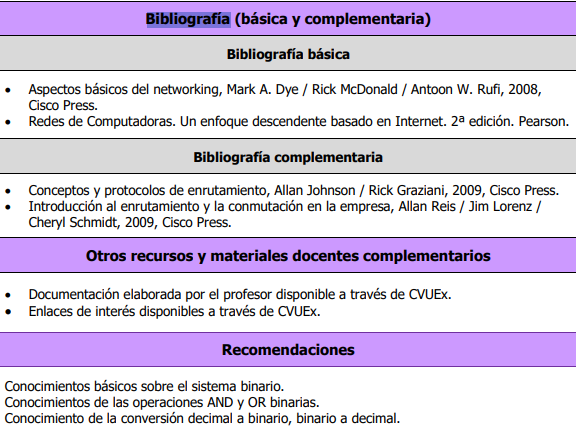

[RA1] Conocer el modelo por capas OSI y TCP/IP, y ser capaz de explicar el funcionamiento de una red de ordenadores basada en ellos.
[RA2] Ser capaz de emplear la aplicación de análisis de tráfico de red Wireshark para reconocer el proceso de encapsulamiento de datos y comprender el funcionamiento de los protocolos de red.
[RA3] Conocer el direccionamiento IP y los métodos de división en subredes para la planificación de un entorno de red.
[RA4] Ser capaz de construir y configurar una red de área local de ordenadores tipo Ethernet y una conexión WAN tipo Serial punto a punto en un entorno de red simulado.
[RA5] Conocer la técnica de enrutamiento estático, y ser capaz de diseñar y configurar rutas estáticas en un entorno de red simulado.
[RA6] Hacerse preguntas sobre la realidad que le rodea a uno y participar activamente en los deberes en torno a la misma, analizando los juicios que se formulan y reflexionando sobre las consecuencias de las decisiones propias y ajenas (CT2, 1er nivel dominio).
[RA7] Organizar diariamente el trabajo personal, recursos y tiempos, con método, de acuerdo a sus posibilidades y prioridades (CT7, 1er nivel dominio).
Tutorías
HORARIO de tutorías PRESENCIALES:
PERÍODO LECTIVO SEMESTRE 1: LUNES de 12:00 a 14:00, MIÉRCOLES de 10:00 a 12:00, JUEVES de 12:00 a 14:00.
Horario de tutorías completo aquí.
Lugar: Despacho 41.
HORARIO de tutorías VIRTUALES SÍNCRONAS:
Realizadas de forma voluntaria por parte del profesor para facilitar la asistencia a alumnado fuera del horario oficial.
PERÍODO LECTIVO SEMESTRE 1: LUNES, MIÉRCOLES Y JUEVES de 17:00 a 19:00.
Las tutorías se realizarán a través de la aplicación MS-Teams en el horario indicado contactando a través del Chat general. En el caso de tener algún problema con esta aplicación, contactar con el profesor a través de matardio@unex.es.
